PeerBlock — это бесплатное программное обеспечение, предназначенное для блокировки нежелательных IP-адресов. Оно позволяет контролировать и ограничивать доступ к вашему компьютеру с помощью фильтрации сетевых пакетов по спискам IP-адресов.
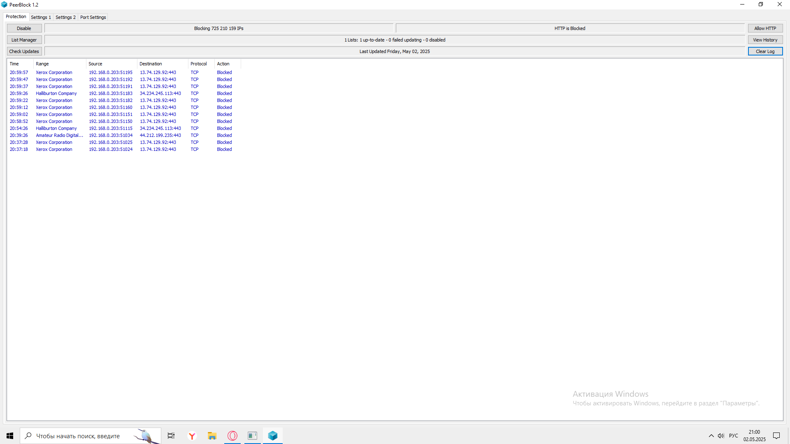
Программа завершит работу.
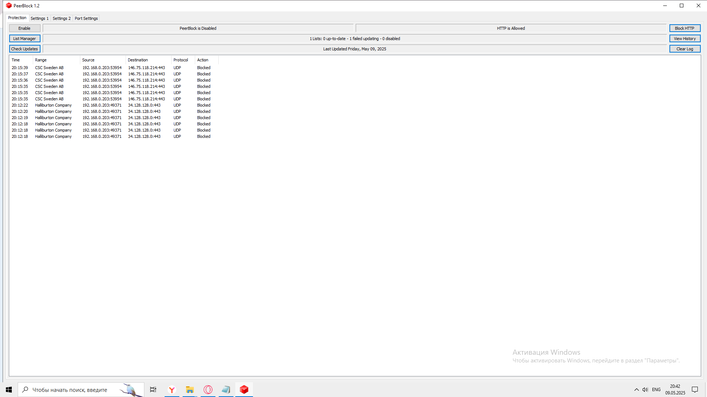
Разрешить HTTP-подключения: программа разрешит подключения по HTTP, даже если они есть в списках блокировки.
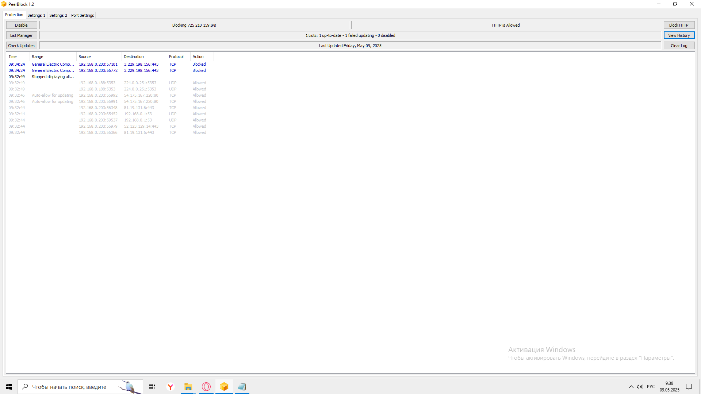
Посмотреть историю подключений: откроется список всех подключений, которые происходили раньше.
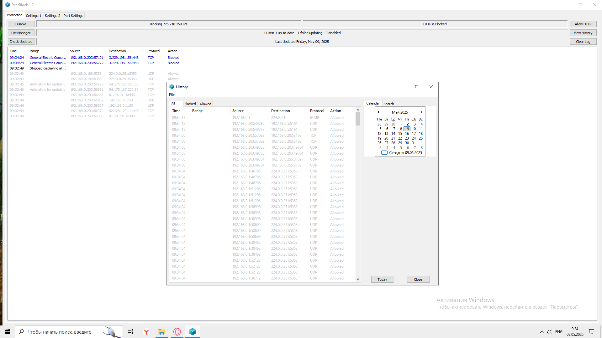
Посмотреть историю блокировок: откроется список всех заблокированных подключений, которые были ранее.
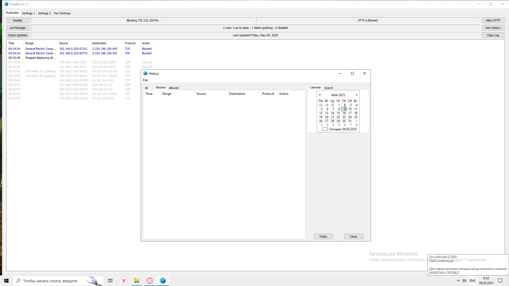
Посмотреть историю разрешений: откроется список всех разрешенных подключений, которые были ранее.
Очистить журнал блокировок: весь список заблокированных подключений очистится, но программа продолжит блокировать вредоносные IP.
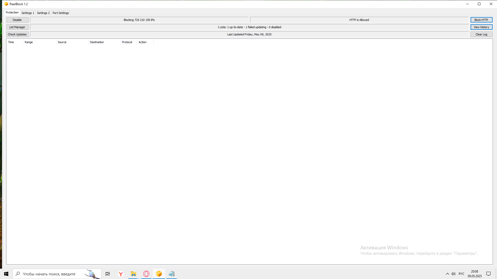
Управлять списками блокировки: откроется окно, где можно добавить новые списки IP, изменить или удалить существующие.
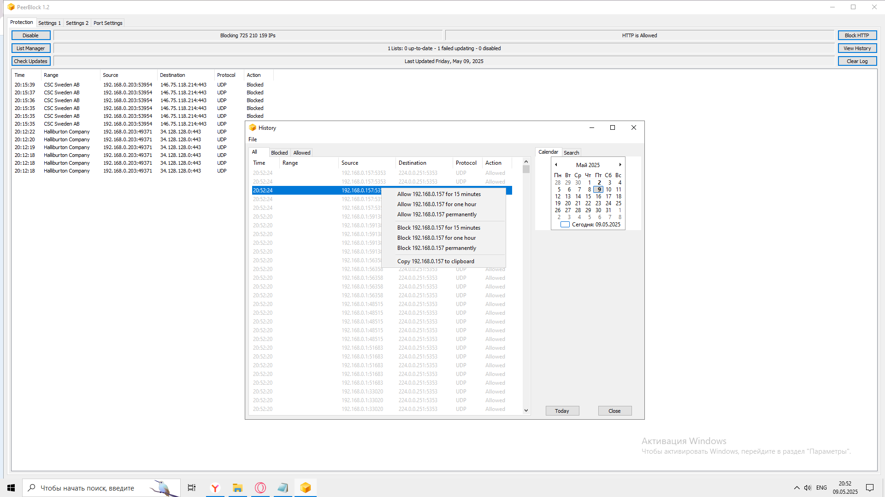
Нажмите кнопку List Manager, чтобы открыть окно управления списками.
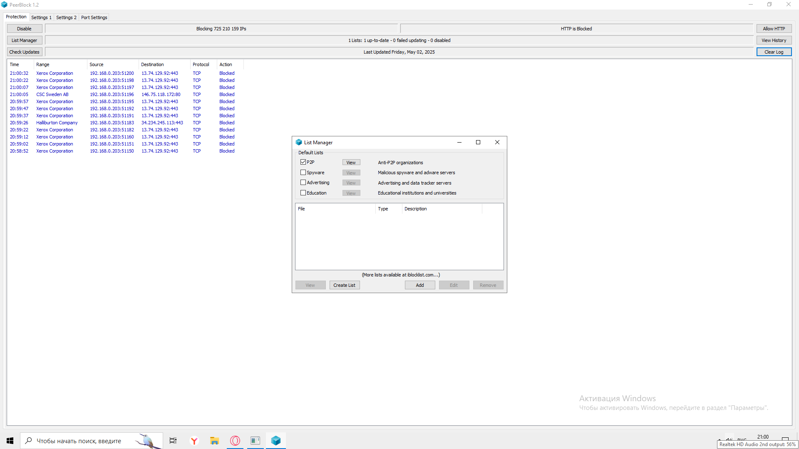
Кнопка рядом с каждым пунктом позволяет просмотреть содержимое выбранного списка.
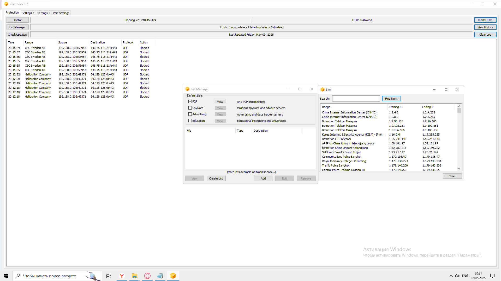
Нажмите кнопку , заполните поля (тип, описание) и выберите файл с IP-адресами.
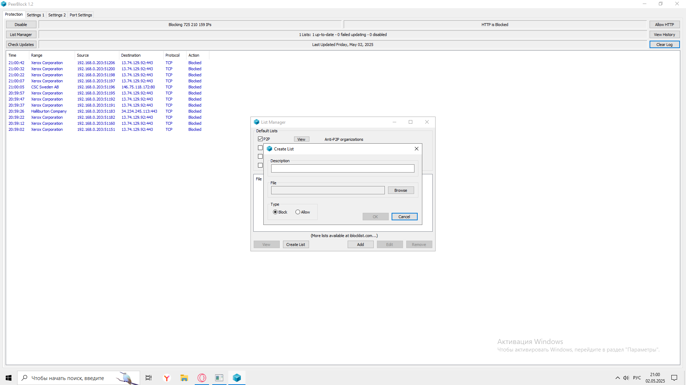
Нажмите кнопку , добавьте файл списка или ссылку на список и укажите его тип и описание.
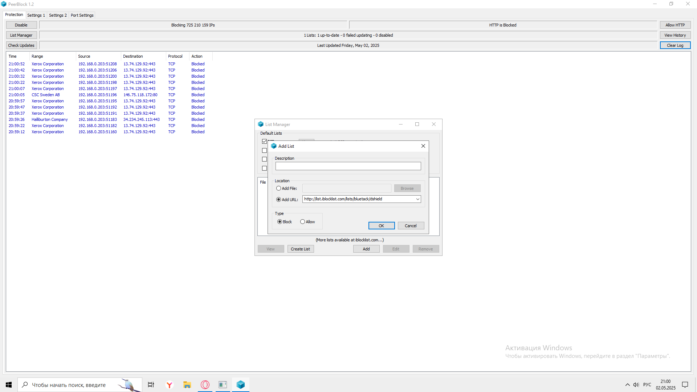
Выберите список и нажмите , чтобы изменить, или , чтобы удалить.
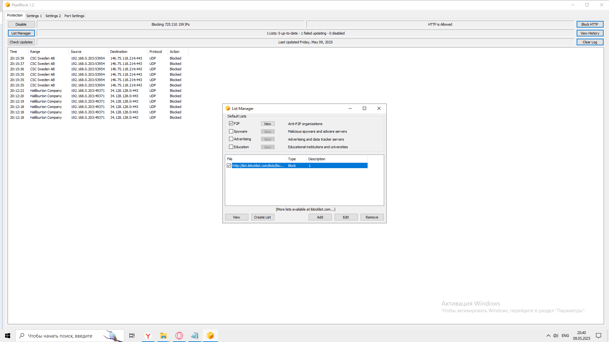
Программа проверит, актуальны ли ваши списки блокировки, и обновит их при необходимости.
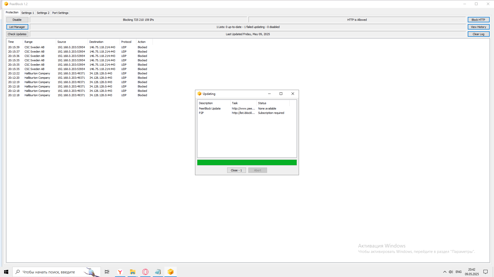